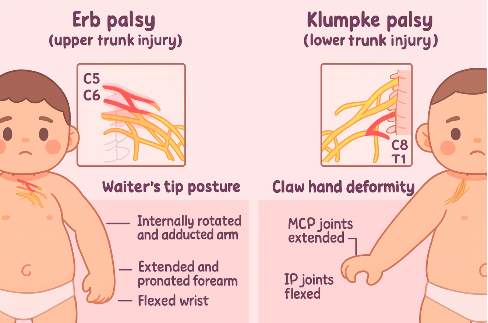

肩難產
2025年2月11日
下午 03:03
|
輔助方法 |
說明 |
|
McRoberts maneuver |
把產婦的腳快速往頭的方向推，讓hip hyperflexion，通常會搭配 suprapubic pressure（壓產婦的恥骨），使胎兒肩膀彈出。 |
|
Woods corkscrew maneuver |
將胎兒的後肩旋轉 180 度，使兩肩靠在一起並拉出，像是轉螺軟木塞蓋。 |
|
Rubin maneuver |
類似 Woods maneuver，但改旋轉前肩，使兩肩靠在一起。 |
|
Fundal pressure |
孕婦無力時的輔助生產方式。生產時從胸往腹部方向，施加壓力在子宮的 fundus 上。 |
neonatal brachial plexus palsy 新生兒臂神經叢麻痺 (113.考古、骨科也愛考）
|
分類（比例） |
受損神經 |
神經麻痺後姿勢 |
備註 |
|
上臂型 Erb's palsy (80%) |
C5–6 |
"waiter's tip posture" |
更易造成肩關節攣縮（contracture）與 glenohumeral dysplasia 有關 |
|
下臂型 Klumpke's palsy (15%) |
C8–T1 |
與 Erb's 相反 手腕：伸直（ext）因內在肌無力（intrinsic minus hand），手指無法抓握或伸直，呈 claw's hand |
可能傷及交感神經而導致 Horner's syndrome |

使用 OneNote 建立。